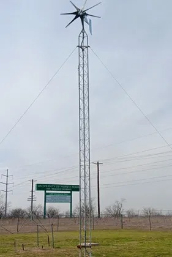
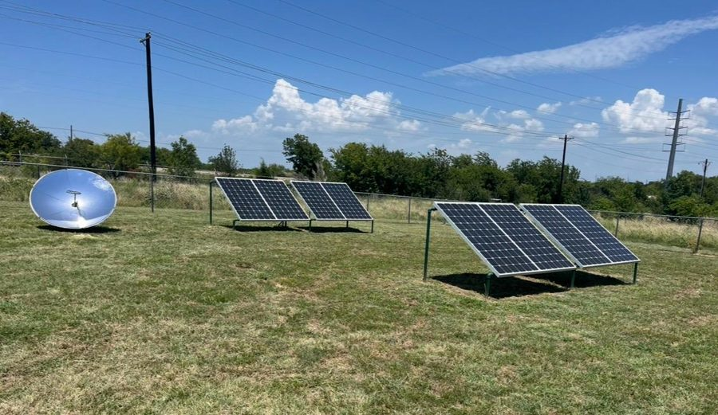
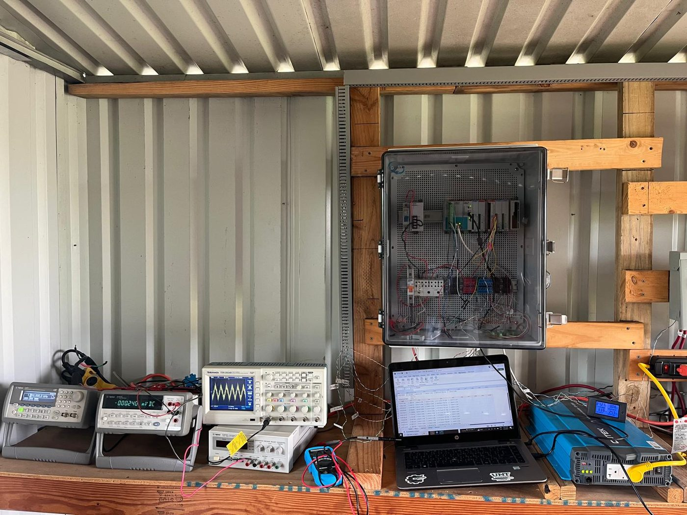
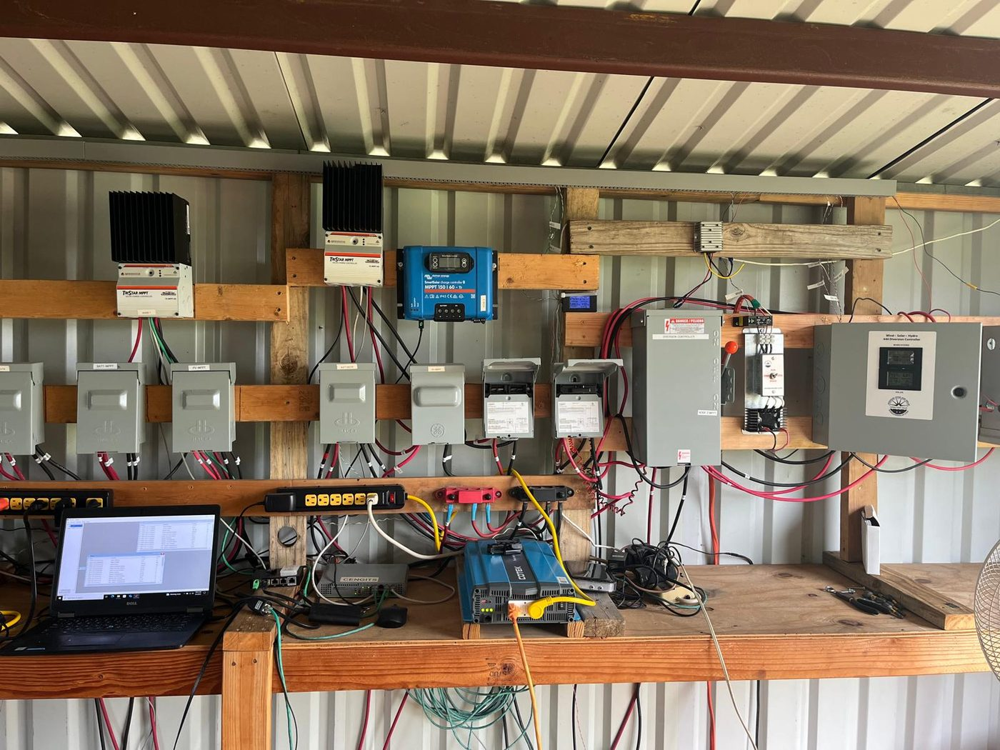
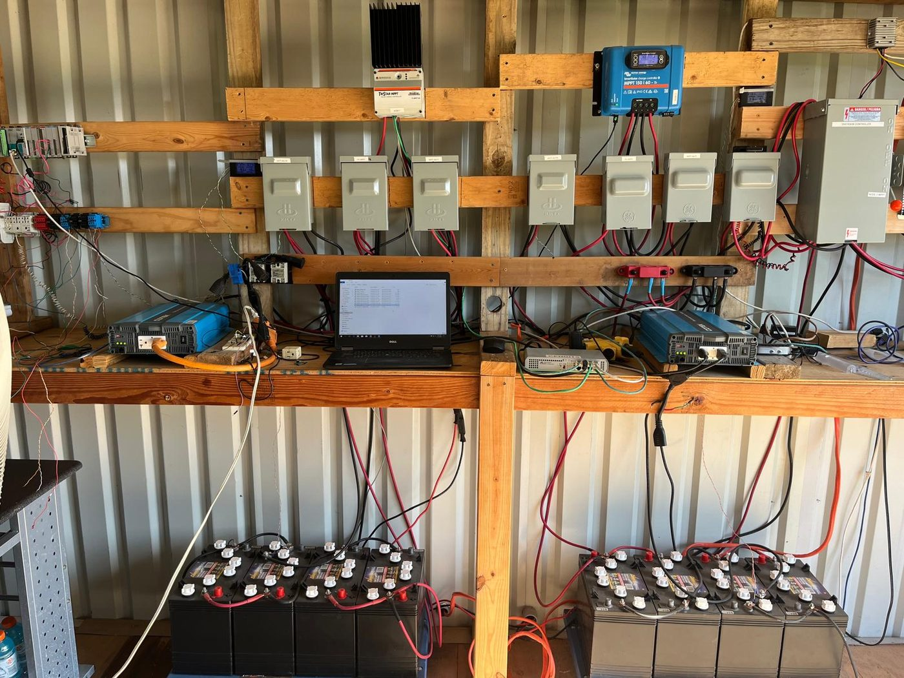
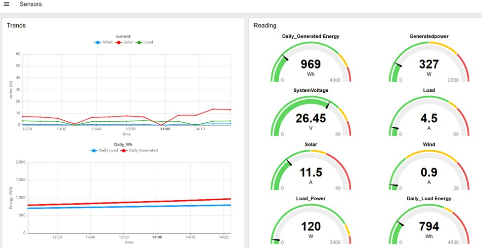

06 / Gallery

Field Work & Testbed
A selection of photos from ongoing testbed development and field installations — illustrative of the kind of research and setup involved, not a complete record.

Wind Turbine — UNT Discovery Park
Tower-mounted wind turbine, part of the tri-source hybrid microgrid testbed.

Dual Solar PV Array + CSP Concentrator
Dual PV array alongside the parabolic CSP-TEG concentrator testbed.
MPPT & Charge Controller Bank
TriStar and Victron SmartSolar MPPT controllers with wind-solar-hydro diversion control and monitoring.

PLC & Data Acquisition Enclosure
Programmable logic controller and wiring for real-time sensor logging and control development.

Electronics & Instrumentation Bench
Oscilloscope, DAQ, and bench instrumentation used for testbed measurement and calibration.

Power Electronics & Battery Storage Bank
Complete charge controller, inverter, and battery bank supporting the microgrid testbed.

Node-RED Supervisory Monitoring Dashboard
Real-time trends and gauges for wind, solar, and load current, voltage, and daily energy generation across the hybrid microgrid.